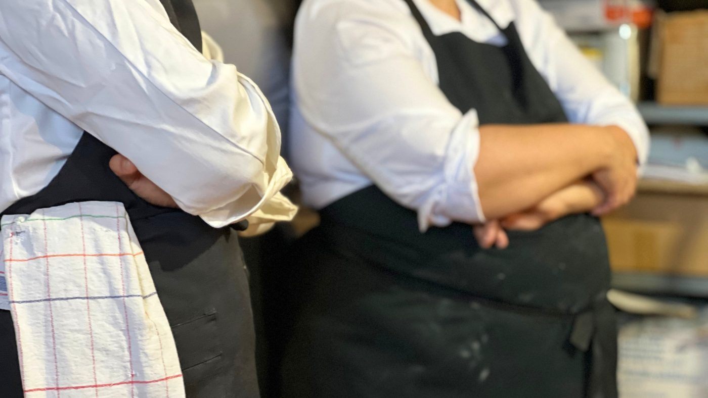

Uno spazio necessario
Nella Casa del Quartiere si raccolgono proposte da tante realtà e persone del territorio. Chi non ha una sede può averne una, abbattendo i costi degli affitti.
Cosa trovi
- Centro di aggregazione
- Sale per incontri
- Coworking e area studio
- Corsi di benessere
- Laboratori e workshop
- Autoimprenditoria femminile
- Eventi, pranzi e cene in terrazza
- Bici e monopattini in condivisione

Ogni seme ha bisogno di cura.
La tua donazione sostiene l'accoglienza di donne, bambine e bambini, i percorsi di uscita dalla violenza, l'autonomia.